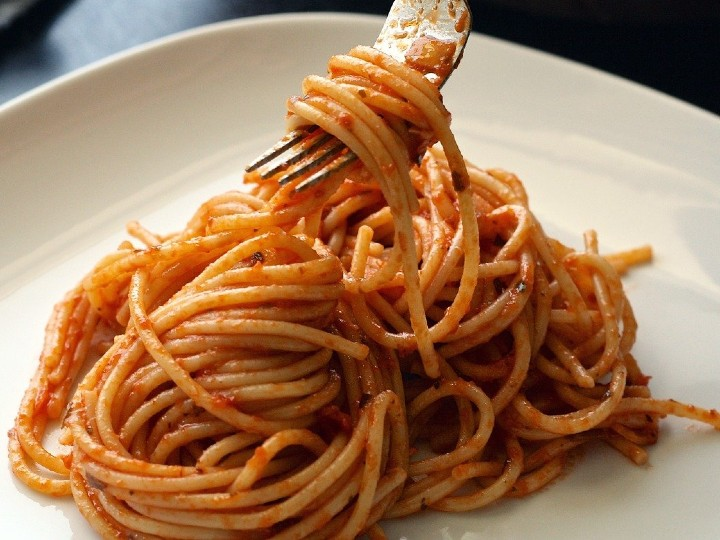
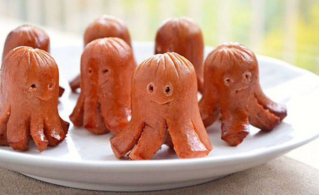

Su infancia fue muy alegre ya que su mama hacia de todo para que estuviera
tranquila, su papa jugaba con ella a veces por que el trabajaba, de chica
le gusta mucho cantar y bailar, participaba en cosas de baile o de otros
eventos. Cuando en su primaria habia eventos de cualquier cosa ella
siempre se metia emocionada y su mama la apoyaba, en varias ocasiones salio al
carnaval, a la calle a bailar, eventos del dia de la madre, del niño, del
padre y otros mas.
Cuando ella tenia estos eventos siempre la iban a ver sus padres o su mama,
ella veia como salir de su trabajo para ir a verla. Muchos eventos fueron los
que ella vivio y tuvo muy bonita experiencia.
Algunos fueron estos:
| Foto |
Comida |
Receta |
|  |
Espagueti |
Hierve 2 litros de agua y, cuando esté en su punto, agrega 2 cucharadas de sal.
Retira del fuego, cuela la pasta y desecha el agua.
Hierve el puré de jitomate a fuego lento y añade la crema, la mantequilla y el cubo sazonador.
Vierte el espagueti en la salsa y mezcla.
Sirve.
|
|  |
SalchiPulpos |
Primeramente necesitamos las salchichas, las que usted
vaya a querer, luego procedemos a cortala en 3 partes para luego
tomar los pedacitos y volver a cortalos por en medio de la punta,
le vamos a sacar 4 patas, despeues de haber echo eso con las demas
procedemos a freir. Listo! cuando esten todas fritas ya podemos
comerlas a gusto.
|
 |
hotcakes |
Mezcla en un tazón la harina, la sal, el polvo para hornear, el bicarbonato y el azúcar.
Reserva.Mezcla en otro tazón los huevos, la leche, la vainilla y una cucharada de mantequilla.
Vierte ésta mezcla en los ingredientes secos e integra con un batidor globo hasta deshacer los grumos.
Reserva en refrigeración hasta el momento de usar.Funde el resto de la mantequilla en una sartén con antiadherente.
Vierte con un cucharón la mezcla de hotcakes.Cocina a fuego medio hasta que se formen burbujas y voltea.
Sirve y acomoda la fruta, las nueces y vierte la miel de maple al gusto.
Licúa los ingredientes de los pasos 1 y 2 para obtener una mezcla más homogenea.
Añade más leche si la mezcla queda demasiado espesaCocina primero todos los hotcakes y después agrega la mantequilla, la miel y las frutas. |